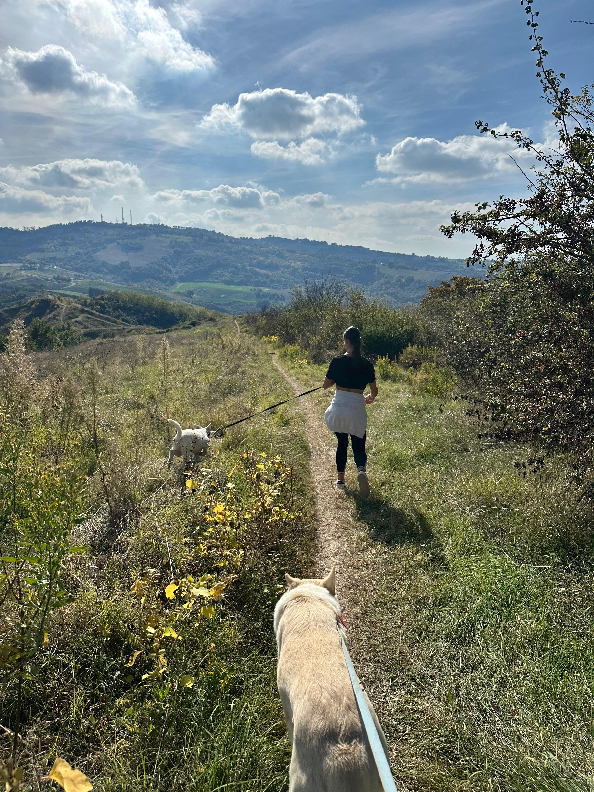
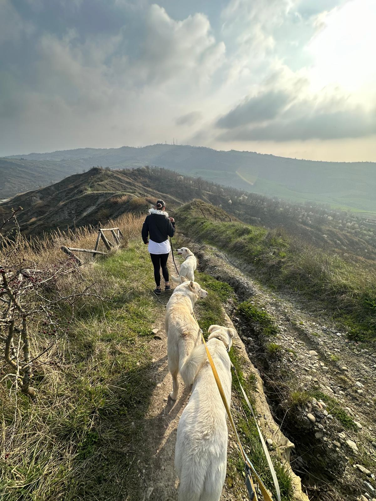

🥾 I Percorsi di Trekking
🥾 Trekking Trails
🥾 Wanderwege
🥾 Les Sentiers de Randonnée
Tre difficoltà, tre esperienze diverse. Tutti i percorsi si snodano tra i calanchi, i vigneti e le chiese della Valle del Sorsa.
Three difficulty levels, three different experiences. All trails wind through the badlands, vineyards and churches of the Sorsa Valley.
Drei Schwierigkeitsstufen, drei verschiedene Erlebnisse. Alle Wege führen durch die Calanchi, Weinberge und Kirchen des Sorsa-Tals.
Trois niveaux de difficulté, trois expériences différentes. Tous les sentiers serpentent à travers les calanchi, les vignobles et les églises de la Vallée du Sorsa.

🌿 La Passeggiata del Cuore 👶 Da 0 anni
🌿 The Heart Walk 👶 From 0 years
🌿 Der Herzspaziergang 👶 Ab 0 Jahre
🌿 La Promenade du Cœur 👶 Dès 0 an
Una passeggiata dolce di 30 minuti adatta a tutti, anche ai più piccoli in braccio o carrozzina, e agli anziani. Si cammina tra i vigneti e l'orto, con vista panoramica sulla vallata. Si incontrano Happy e Stella che ti faranno compagnia per tutto il percorso. Tappa finale: la panchina panoramica con un bicchiere di vino o una spremuta.
A gentle 30-minute walk suitable for everyone, even the smallest children in arms or pram, and the elderly. You walk through the vineyards and kitchen garden, with a panoramic view over the valley. You meet Happy and Stella who will keep you company throughout the route. Final stop: the panoramic bench with a glass of wine or fresh juice.
Ein sanfter 30-minütiger Spaziergang, geeignet für alle, auch für die Kleinsten auf dem Arm oder im Kinderwagen und für ältere Menschen. Sie gehen durch die Weinberge und den Gemüsegarten mit Panoramablick über das Tal. Sie treffen Happy und Stella, die Sie auf dem gesamten Weg begleiten werden.
Une douce promenade de 30 minutes adaptée à tous, même aux plus petits dans les bras ou en poussette, et aux personnes âgées. On marche entre les vignobles et le potager, avec vue panoramique sur la vallée. On rencontre Happy et Stella qui vous accompagneront tout au long du parcours.

🌄 I Calanchi e la Chiesa di Tessello 🧒 Dai 4 anni
🌄 The Badlands and Tessello Church 🧒 From 4 years
🌄 Die Calanchi und die Kirche Tessello 🧒 Ab 4 Jahre
🌄 Les Calanchi et l'Église de Tessello 🧒 Dès 4 ans
Un'ora di cammino tra i calanchi — le caratteristiche argille erose dal tempo che rendono la Valle del Sorsa unica in Romagna. Si raggiunge la piccola chiesa romanica di Tessello, con affreschi medievali e una storia millenaria. Happy e Stella vi guideranno lungo il sentiero. Panorami mozzafiato sulla vallata e sul mare, nelle giornate limpide.
An hour's walk through the badlands — the characteristic clay formations eroded by time that make the Sorsa Valley unique in Romagna. You reach the small Romanesque church of Tessello, with medieval frescoes and a thousand-year history. Happy and Stella will guide you along the path. Breathtaking views of the valley and sea on clear days.
Eine Stunde Wanderung durch die Calanchi — die charakteristischen, vom Zeit erodierten Tonformationen, die das Sorsa-Tal einzigartig in der Romagna machen. Sie erreichen die kleine romanische Kirche von Tessello mit mittelalterlichen Fresken und einer tausendjährigen Geschichte.
Une heure de marche à travers les calanchi — les formations argileuses caractéristiques érodées par le temps qui rendent la Vallée du Sorsa unique en Romagne. On atteint la petite église romane de Tessello, avec ses fresques médiévales et son histoire millénaire.

⛰️ Il Grande Anello: Tessello, LuogoRaro e i Laghi 🧒 Dai 6 anni
⛰️ The Grand Loop: Tessello, LuogoRaro and the Lakes 🧒 From 6 years
⛰️ Die große Runde: Tessello, LuogoRaro und die Seen 🧒 Ab 6 Jahre
⛰️ La Grande Boucle : Tessello, LuogoRaro et les Lacs 🧒 Dès 6 ans
Il percorso completo della Valle del Sorsa: due ore attraverso i calanchi più spettacolari, i laghi nascosti, la chiesa di Tessello e LuogoRaro — un luogo magico con una storia di spiritualità e comunità. Si torna al punto di partenza in trattore dal punto più lontano. Un'esperienza indimenticabile per chi ama camminare e scoprire.
The complete Sorsa Valley route: two hours through the most spectacular badlands, hidden lakes, Tessello church and LuogoRaro — a magical place with a history of spirituality and community. Return to the starting point by tractor from the furthest point. An unforgettable experience for those who love walking and discovering.
Die komplette Sorsa-Tal-Route: zwei Stunden durch die spektakulärsten Calanchi, versteckte Seen, die Kirche Tessello und LuogoRaro — ein magischer Ort mit einer Geschichte der Spiritualität und Gemeinschaft. Rückkehr zum Ausgangspunkt mit dem Traktor vom entferntesten Punkt.
Le parcours complet de la Vallée du Sorsa : deux heures à travers les calanchi les plus spectaculaires, les lacs cachés, l'église Tessello et LuogoRaro — un lieu magique avec une histoire de spiritualité et de communauté. Retour au point de départ en tracteur depuis le point le plus éloigné.